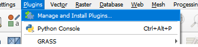
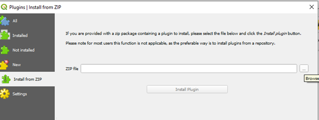
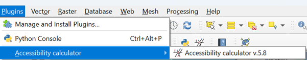
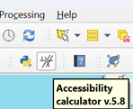

3. Installation
You need a QGIS be installed on your PC, see https://qgis.org.
Go to Plugin → Manage and Install Plugins menu

Choose Install from ZIP

Find
tau_accessibility_calculator.zipfile and click Install Plugin. The plugin will be installed in the directoryC:\Users\NameUser\AppData\Roaming\QGIS\QGIS3\profiles\default\python\plugins\
The new button and menu item will be added to the toolbar panel and plugins’ menu


Note
If you already have the instaled version of this plugin, delete it, using the Manage and Install Plugins menu, before installing a new one.